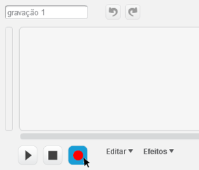
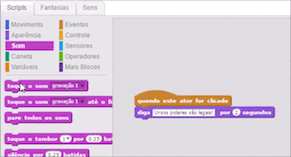

Grave sua voz
Adicione sua voz para dar vida ao seu projeto!
Clique na guia Sons, então clique em  .
.

Dica: você pode precisar clicar em "Permitir" para gravar. Grave você mesmo dizendo o que você gosta sobre essa coisa favorita.
Não consegue gravar? Clique em para escolher um som da Biblioteca de sons.
Então, clique na guia Scripts. Clique na categoria Sons e arraste um bloco reproduzir som.
Arraste o bloco som e coloque-o no script, assim:

Dica: coloque o bloco reproduzir som antes do bloco diga para que o som seja reproduzido ao mesmo tempo em que o balão de diálogo aparecer.